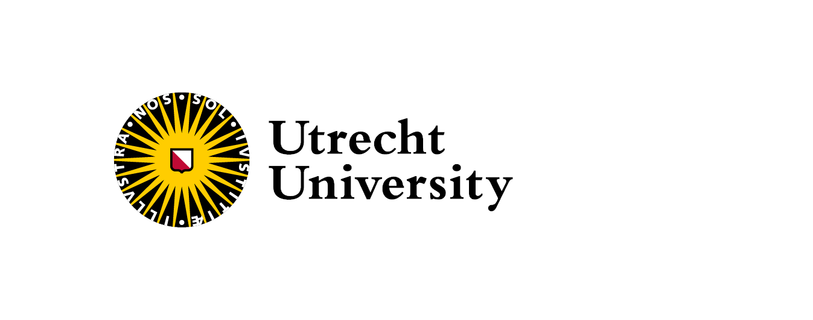

Bayesian Calibration of Gravitational-Wave Detectors Using Null
Streams Without Waveform Assumptions
2510.06327
Isaac C. F. Wong
2025-11-21
Collaborators: Francesco Cireddu, Milan Wils, Tom Colemont, Harsh Narola, Chris Van Den Broeck, Tjonnie G. F. Li
Motivation and ET Context
- GW detections transform astrophysics, but calibration errors limit precision (e.g., LIGO: ~10% amplitude, ~3° phase at 100 Hz)
- ET Challenge: 10x sensitivity demands $\lesssim 1\%$ calibration for, e.g., signal detection, parameter estimation (Essick 2022), Hubble constant measurements (Huang et al. 2025), black hole spectroscopy (Sinha et al. 2025)
- This Work: Sky-independent null streams enable non-invasive, waveform/GR-independent calibration using all GW signals
Detector Calibration Overview
GW Detectors 101: What Are They?
- Core Idea: Measure tiny spacetime ripples (strains $\sim10^{-21}$) from cosmic events like black hole mergers
- Design: Michelson Interferometers—split laser, bounce off mirrors 3-10 km apart, recombine for phase shift
- Key Components: Arms (perpendicular), beam splitter, mirrors (suspended, cryo-cooled in ET), photodetectors
- Current: LIGO/Virgo (USA/EU, room temp.); ET Future: Underground, triangular, 10x sensitive (3-10k Hz)
GW Detectors 101: What Are They?
- Core Idea: Measure tiny spacetime ripples (strains $\sim10^{-21}$) from cosmic events like black hole mergers
- Design: Michelson Interferometers—split laser, bounce off mirrors 3-10 km apart, recombine for phase shift
- Key Components: Arms (perpendicular), beam splitter, mirrors (suspended, cryo-cooled in ET), photodetectors
- Current: LIGO/Virgo (USA/EU, room temp.); ET Future: Underground, triangular, 10x sensitive (3-10k Hz)
How Detectors Work: From Signal to Data
Calibration Basics: What Is It?
- A fundamental component of the success of GW observations is the precise calibration of interferometric data
- It reconstructs the raw, digitized electrical output of the detector into an accurate and reliable measure of the dimensionless
- $\tilde{d}_{\mathrm{err}}(f) = \frac{\Delta \tilde{L}_{\mathrm{free}}(f)}{R(f)}$
Calibration Basics: What Is It?
- $\tilde{d}_{\mathrm{err}}(f) = \frac{\Delta \tilde{L}_{\mathrm{free}}(f)}{R(f)}$
- $\tilde{d}_{\mathrm{err}}(f)$ is measured continuously
- $\Delta \tilde{L}_{\mathrm{free}}(f)$ is the differential arm length change due to GWs
- $R(f)$ is the response function of the detector, and is only fully measured infrequently during breaks
Calibration Basics: What Is It?
- Definition: Tuning detector model to match true response: Amplitude (gain), phase (timing), timing offsets
- Why Needed? Components drift (e.g., mirrors warm 0.1K → 1% error); cumulative ~5-10% in runs
- Types: Absolute (full scale) vs. Relative (arm-to-arm); freq-dependent (e.g., worse at low Hz)
- Impact: Uncalibrated → biased distances, spins, sky loc. in GW parameter estimation
How Calibration Is Done Today
-
Fundamental quantities that define the response of the
detector:
- Amount of power circulating in the Fabry-Pérot cavities
- The mass of the cavity mirrors
- Frequency tracking
- Timing system
Timing References
- Use of Global Positioning System (GPS) receivers and local atomic clocks
- Provide reliable timing at better than the level of $\pm 1\mu s$

Direct Force References
- Photon Calibrators (PCal)
- Use of radiation pressure to apply a force directly on its given arm cavity optic, displacing it along the arm cavity beam axis
- The PCal uncertainty for LIGO detectors in the current observing run (O4) is 0.15-0.3%
Direct Force References
- Newtonian Calibrators (NCal) or Gravity Field Calibrators (GCal)
- A system of rotating masses that cause periodic changes in the local gravitational field applying a known gravitational force on the end test masses
- The relative standard uncertainty on the amplitude of the Ncal-induced displacements at Virgo during O4 is 0.17 %
Calibration Error of LIGO Hanford in O3b
Astrophysical Calibration
- Concept: Use known GW signals with known EM counterparts (e.g., BNS mergers) to calibrate detectors by matching observed data to expected waveforms
Astrophysical Calibration
- Advantages: Directly ties calibration to astrophysical signals; can capture time-dependent drifts during observing runs
-
Limitations:
- Requires accurate waveform models; rely on EM counterparts which may not always be available
- Limited to specific source types
- Only provides amplitude calibration
Null Streams in Triangular Detector Network
Background: Null Streams in Triangular Detectors
- ET Geometry: 3 co-located 10-km arms underground; long-wavelength approx. enables sky-independent null streams
- Prior Self-Calibration: Sagnac nulls require templates/GR (e.g., Schutz et al. 2020); EM-counterpart and GR dependent (Pitkin et al. 2016)
- Gap: No method uses arbitrary GWs for calibration without assumptions
- Assumption: Focus on relative errors (absolute via instrumental priors); 8-512 Hz band
What is null stream?
- A null stream is a linear combination of the outputs from a network of gravitational-wave detectors that cancels out the gravitational-wave signal, leaving only noise
-
Null stream has been explored for
- veto
- glitch mitigation
- search of alternative GW polarizations (My PhD work)
What is null stream?
- In general, the linear combination depends on the sky location of the source
- However, for a triangular detector network like ET, the null stream can be constructed in a sky-independent manner due to the symmetry of the detector configuration and the long-wavelength approximation
- $\tilde{s}_{1}(f) + \tilde{s}_{2}(f) + \tilde{s}_{3}(f) = 0$
Methods Overview
- Approach: Bayesian inference on null stream data
- Key: Projection matrix $P_\mathrm{null}$ that cancels GW $h$
- Parameters $\theta$: Cubic splines for amp/phase errors (10 knots); priors from LIGO (~10% amp, 3° phase)
- Likelihood: Time-freq Gaussian on wavelet transform of null stream (ortho. wavelets for stationarity)
$d_\mathrm{null} = P_\mathrm{null}(C(f)\tilde{h}(f) +
\tilde{n}(f))$
$\begin{aligned}&P_\mathrm{null}(f; \theta) \\ &= I - W(f) (W^{\dagger}(f)W(f))^{-1}W^{\dagger}(f) \end{aligned}$
$W(f) = S_n^{-1/2}(f) C(f;\theta) F$
$\begin{aligned}&P_\mathrm{null}(f; \theta) \\ &= I - W(f) (W^{\dagger}(f)W(f))^{-1}W^{\dagger}(f) \end{aligned}$
$W(f) = S_n^{-1/2}(f) C(f;\theta) F$
Methods Overview
- Approach: Bayesian inference on null stream data
- Key: Projection matrix $P_\mathrm{null}$ that cancels GW $h$
- Parameters $\theta$: Cubic splines for amp/phase errors (10 knots); priors from LIGO (~10% amp, 3° phase)
- Likelihood: Time-freq Gaussian on wavelet transform of null stream (ortho. wavelets for stationarity)
Implementation and Simulation Setup
-
Tools:
nullcalpackage;Bilbyfor inference,dynestysampler ($10^3$ live points) - Injections: BBH ($m_{1}=35.6 M_{\odot}$, $m_{2}=30.6 M_{\odot}$, SNR 20-300); ET-D noise PSD; multi-signal overlaps
- Metric: Generalized std. dev. (GSD) defined as $\bar{\sigma} = \det(\boldsymbol{\Sigma}_{\theta})^{1/2N}$ ratio (posterior/prior) for constraint tightness
- $\bar{\sigma}$: Typical average standard deviation per parameter
- Validation: Recovers injected errors within 90% credible intervals
Implementation and Simulation Setup
Results Overview
Results Overview
- We begin with a prior based on current LIGO calibration uncertainties (~10% amplitude, ~3° phase)
- This simulates a follow-up recalibration using null stream after instrumental calibration
Results: SNR Dependence
- Finding: Calibration constraints tighten linearly with network SNR (20-300)
- Null Stream SNR: ~10% of network SNR; drives precision (e.g., 17.6% improvement at high SNR)
- Implication: Bright events (e.g., nearby BBH) yield immediate calibration gains for ET
Results: Multi-Signal Degeneracy Breaking
\[ \begin{aligned} \tilde{\boldsymbol{s}}(f) & =
\boldsymbol{C}(f)\boldsymbol{F}\tilde{\boldsymbol{h}}(f) \\ & =
\boldsymbol{C}(f) \begin{bmatrix} \boldsymbol{f}_{+} &
\boldsymbol{f}_{\times} \end{bmatrix} \begin{bmatrix}
\tilde{h}_{+}(f) \\ \tilde{h}_{\times}(f) \end{bmatrix} \\ & =
\boldsymbol{C}(f) \begin{bmatrix} \boldsymbol{f}_{+} &
\boldsymbol{f}_{\times} \end{bmatrix} \begin{bmatrix}
\tilde{h}_{+}(f) \\ i\epsilon\tilde{h}_{+}(f) \end{bmatrix} \\ & =
\boldsymbol{C}(f) (\boldsymbol{f}_{+} +
i\epsilon\boldsymbol{f}_{\times}) \tilde{h}_{+}(f) \end{aligned}
\]
Results: Multi-Signal Degeneracy Breaking
- Single Signal: Polarization degeneracy limits (GSD ratio ~0.82 at SNR=26)
- Multiple Overlaps: Ratio drops to 0.65 (3 signals); posteriors converge to truth
Results: Multi-Signal Degeneracy Breaking
- Example: 32 Hz posteriors for rel. amp/phase ($1 + \delta A_{j}$, $\delta \varphi_{j}$) tighten with number of signals
- ET Relevance: Dense signal environment naturally breaks degeneracy
Results: Multi-Signal Degeneracy Breaking
- Example: 32 Hz posteriors for rel. amp/phase ($1 + \delta A_{j}$, $\delta \varphi_{j}$) tighten with number of signals
- ET Relevance: Dense signal environment naturally breaks degeneracy
Results: The Three-Signal Case with SNR 300
Results: The Three-Signal Case with SNR 300
Discussion: Degeneracies and ET Integration
- Degeneracies: Common-mode absolute error (fix w/ lab priors); polarization (broken by multi-events)
- Limitations: Long-wavelength approx. (valid $\lesssim 1000$ Hz for ET); assumes Gaussian noise
- ET Synergies: Complements in-situ methods; test in ET Mock Data Challenges
- Broader: LISA (space nulls). Long-wavelength approx. valid $\lesssim 1$ mHz
Conclusions and Outlook
- Summary: GR/waveform-independent Bayesian null-stream calibration; 17.6% precision gain in ET sims
- Key Advance: Uses all GWs (incl. backgrounds) for non-invasive error constraints
- Next: Apply to ET MDC; Implication on science goals
-
Advertisement: We will release a package
gwsimto simulate MDC data which highlights the full traceability and reproducibility by the end of the year. Stay tuned!
Thank You!
Questions?
- Preprint
- Presentation Slides
-
nullcal(will be public after the paper is accepted)